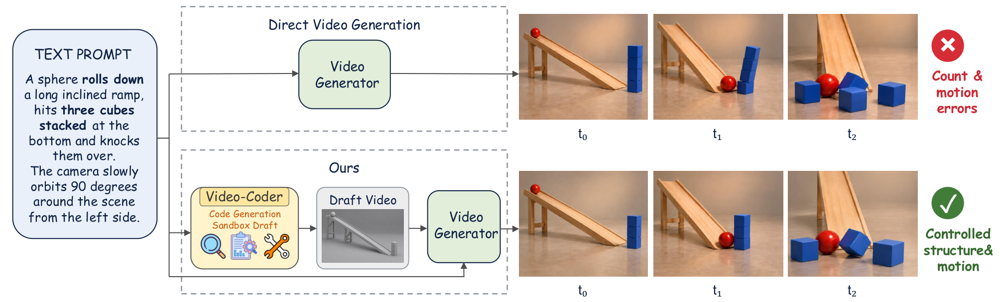
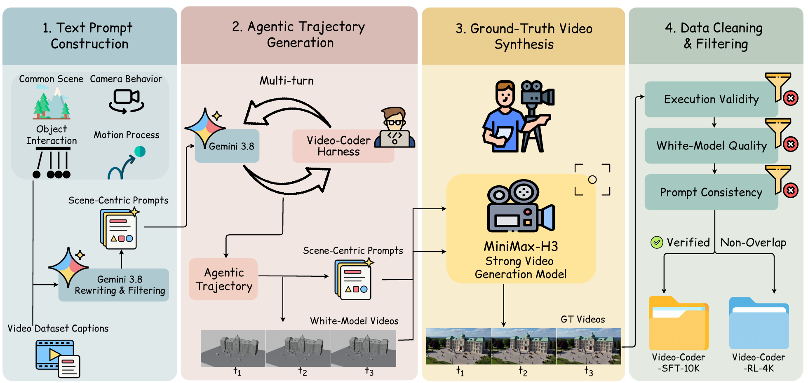

Introduction
Video-Coder is a coding agent that writes and runs Blender code to build a draft video: a gray-clay 3D scene that fixes object count, layout, motion and camera. A video generator then turns the draft into the final video.
+23.6VBench-2.0 over MiniMax-H3
+0.06PhyGenBench over MiniMax-H3
10k + 4kopen SFT / RL samples

Method
The agent works in the Video-Coder Harness, a Blender sandbox where it writes, runs, inspects and revises its program. We train Qwen3.5-9B with SFT, then agentic RL with an execution reward that anneals into a video reward.

Results
Adding the draft video to MiniMax-H3 gives the best score on every physics category of both benchmarks, and the same agent also helps OmniWeaving without retraining.
| Method | Mechanics | Optics | Thermal | Material | Average |
|---|---|---|---|---|---|
| Commercial | |||||
| Pika | 0.35 | 0.56 | 0.43 | 0.39 | 0.44 |
| Gen-3 | 0.45 | 0.57 | 0.49 | 0.51 | 0.51 |
| Kling | 0.45 | 0.58 | 0.50 | 0.40 | 0.49 |
| Open models | |||||
| CogVideoX | 0.39 | 0.55 | 0.40 | 0.42 | 0.45 |
| Open-Sora V1.2 | 0.43 | 0.50 | 0.44 | 0.37 | 0.44 |
| LaVie | 0.30 | 0.44 | 0.38 | 0.32 | 0.36 |
| Vchitect-2.0 | 0.41 | 0.56 | 0.44 | 0.37 | 0.45 |
| MiniMax-H3 | 0.61 | 0.73 | 0.52 | 0.55 | 0.61 |
| HunyuanVideo | 0.33 | 0.39 | 0.26 | 0.30 | 0.33 |
| OmniWeaving | 0.48 | 0.56 | 0.43 | 0.39 | 0.48 |
| Wan2.2-TI2V-5B | 0.55 | 0.58 | 0.53 | 0.50 | 0.54 |
| Cosmos-Predict2.5 | 0.30 | 0.33 | 0.41 | 0.39 | 0.35 |
| LTX-Video-2B | 0.51 | 0.58 | 0.48 | 0.45 | 0.51 |
| Video-CoCo | 0.51 | 0.58 | 0.48 | 0.45 | 0.51 |
| Ours | |||||
| Video-Coder-9B + OmniWeaving | 0.52 | 0.58 | 0.52 | 0.44 | 0.51 |
| Video-Coder-9B + MiniMax-H3 | 0.68 | 0.79 | 0.60 | 0.61 | 0.67 |
| Method | Mechanics | Thermotics | Material | Average |
|---|---|---|---|---|
| Sora | 62.22 | 43.36 | 64.94 | 56.84 |
| Kling 1.6 | 65.55 | 59.46 | 68.00 | 64.34 |
| HunyuanVideo | 76.09 | 56.52 | 64.37 | 65.66 |
| MiniMax-H3 | 67.59 | 47.22 | 48.94 | 54.58 |
| CogVideoX-1.5 | 80.80 | 67.13 | 83.19 | 77.04 |
| Video-Coder-9B + MiniMax-H3 | 88.67 | 70.88 | 75.02 | 78.19 |
1st2nd3rd
| Variant | Score | Δ |
|---|---|---|
| MiniMax-H3 | 0.61 | – |
| + Video-Coder-SFT | 0.63 | +0.02 |
| + Video-Coder w/o annealing | 0.65 | +0.04 |
| + Video-Coder w/o video reward | 0.64 | +0.03 |
| + Video-Coder w/o execution reward | 0.63 | +0.02 |
| + Video-Coder | 0.67 | +0.06 |
Data Case
Prompt← Draft video (Video-Coder)Generated video (MiniMax-H3) →
BibTeX
@article{wang2026videocoder,
title = {Video-Coder: Reinforcing Agentic Coding for Video Generation},
author = {Wang, Chaoyang and Gao, Sicheng and Hu, Junan and Li, Kunyang and
Chen, Dongyang and Zhou, Yiyang and Yao, Huaxiu and Lee, Yong Jae and
Timofte, Radu and Shang, Yuzhang},
journal = {arXiv preprint},
year = {2026}
}